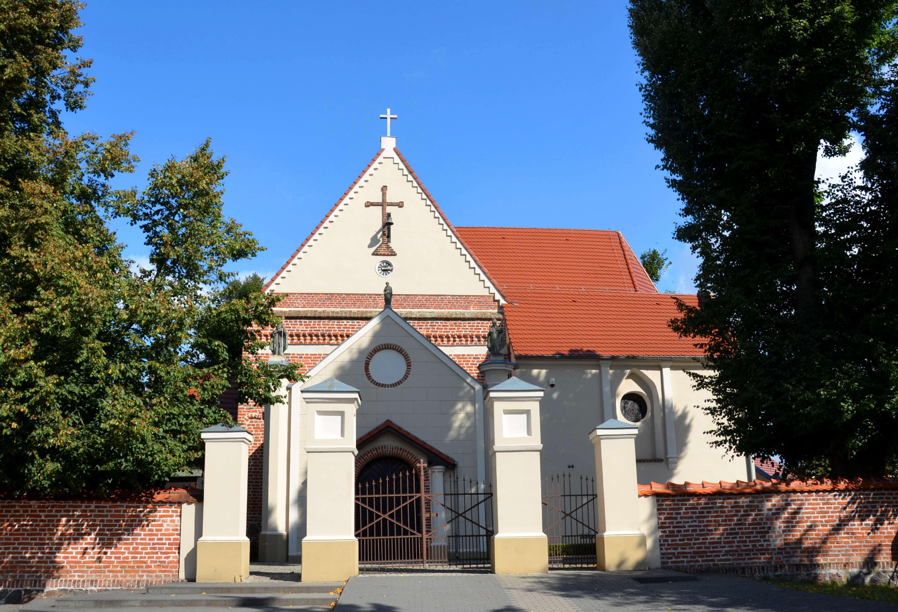
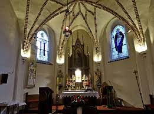
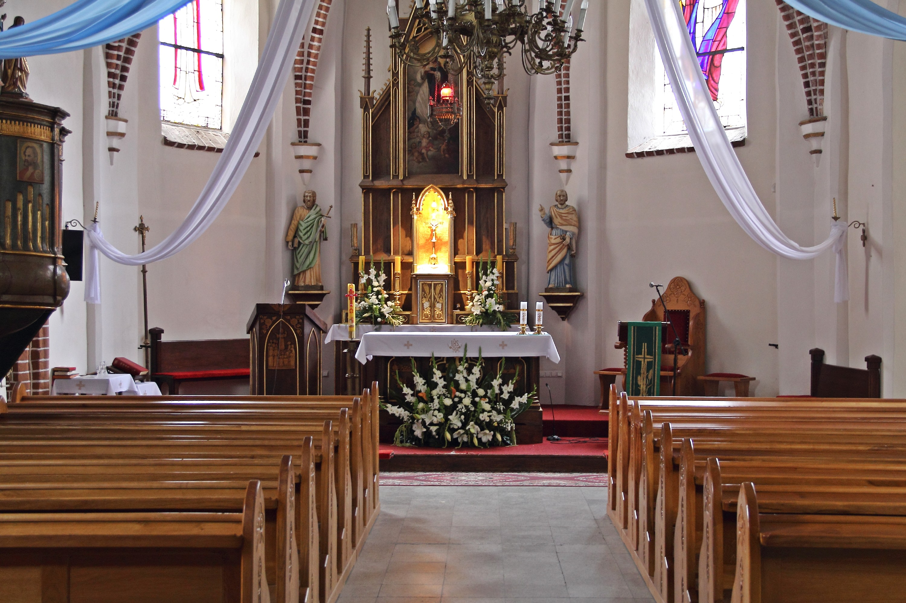
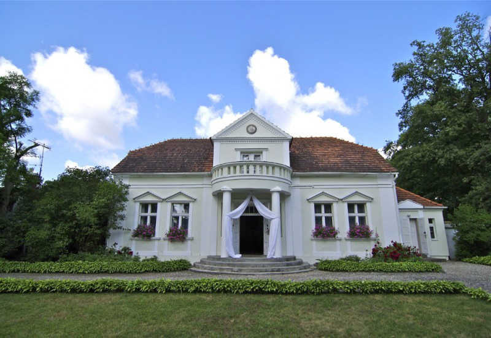
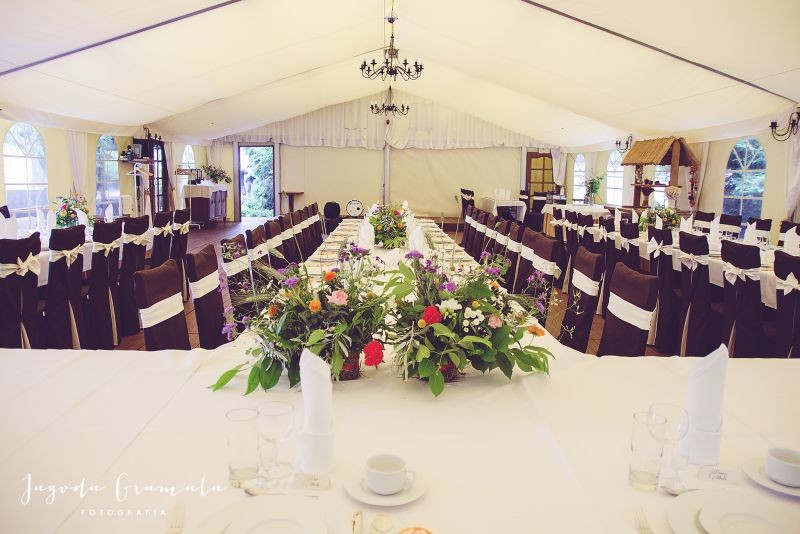
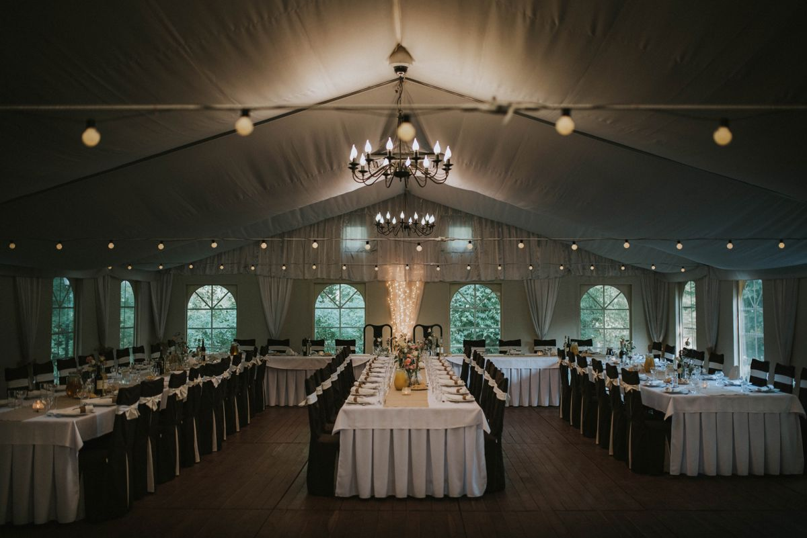
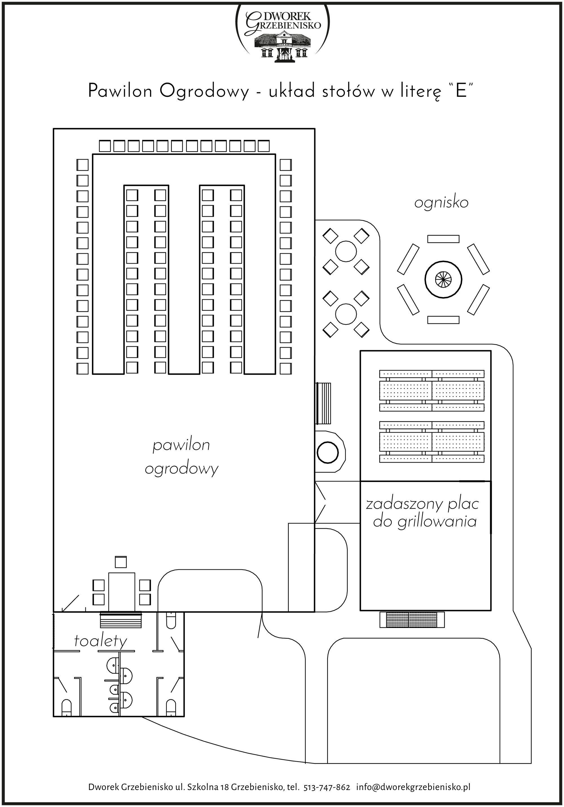
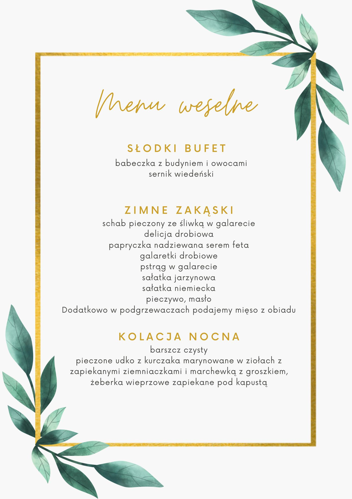
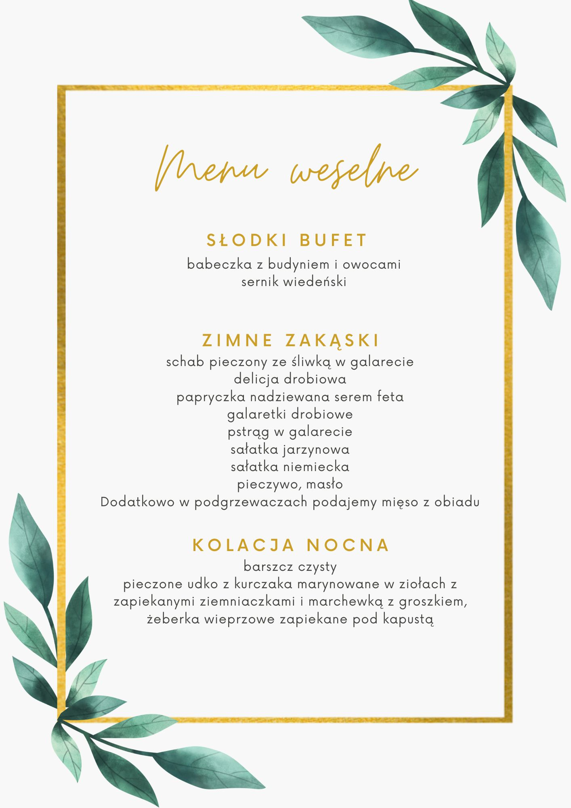

Plan dnia
- 14:00 odjazd autokaru spod stadionu
- 15:00 ŚLUB
- przejazd na miejsce wesela
- 17:00 Powitanie
- 3:00 Zakończenie
Ślub
Kościół w Ceradzu Kościelnym



Wesele
Dworek Grzebienisko
Przy dworku znajduje się parking



Ustawienie stołów
MENU
 

Dodatkowo opcja wegetariańska. Prosimy o jak najszybsze poinformowanie jeśli ktoś nie je mięsa :)
Transport
Zorganizowaliśmy autokar, który dowiezie gości do kościoła i następnie na miejsce wesela. Jeśli ktoś jest chętny na taką opcję to prosimy o informację. Odjazd o 14:00, autokar będzie czekał przy stadionie. W czasie wesela będzie dostępny także kierowca, który może zawieźć do Poznania - taki kurs będzie płatny 20 zł.
Zamiast kwiatów
Zamiast kwiatów chcemy Was prosić o wsparcie kociej fundacji Na Ratunek Bezdomniakom. Fundacja ma konkretne potrzeby i nie wszystkie karmy są odpowiednie dla chorych kociaków, dlatego poniżej wrzucamy listę karm, które można kupić. Utworzyliśmy również zrzutkę (link tutaj) dla osób, które nie chcą jeździć z puszkami. Po wpłatach zrobimy większe zamówienie odpowiednich produktów i przekażemy fundacji.
- Biedronka - czarna puszka kitty 200g
- Carrefour/Brico/Kaufland - dowolne puszki Dolina Noteci
- Maxizoo - Dolina Noteci, Premiere, Animonda Carny
- Zooplus - te co powyżej, Catz Finefood, Mac's, Feringa